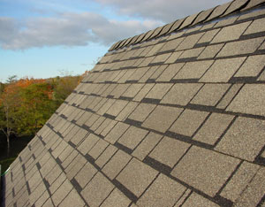

If your roof hasn’t leaked yet, it probably will someday. But there’s no need to panic. It’s easier to repair a leaking roof than you might think. Sometimes a small, skillful repair delivered in the right location can extend the useful life of your roof by years. And if you can fix a leaking roof yourself, you’ll never have to wait for someone else to pull you out of a leaky roof jam. Simple tools and basic knowledge can save you hundreds of dollars in professional repairs while also extending the working life of the roof. Here are four typical old-roof problems and how to fix them.
Necessary tools and supplies:
About three-quarters of all homes in the United States are covered in asphalt shingles, and there are two reasons why you might need to replace individual shingles or groups of them: storm damage and localized deterioration. It’s not unusual for a few shingles to break off here and there in a strong wind. Sometimes pockets of shingles also go bad in specific areas because of manufacturing defects within just a few bundles, while the rest of the roof looks fine. Regardless of the culprit, shingle replacement is easier than it looks.
Start repair work with a thin-bladed pry bar, lifting the sealed edges of undamaged neighboring shingles so you can pull out the broken ones. Carefully bend back the good shingles along the top of the damaged area, removing the remains of any dead shingles as far up as you can reach. Pull all visible nails. You should be left with the damaged area now completely free of bad shingles, ready for new ones.
Start re-shingling at the bottom of the trouble zone, nailing new shingles in the space between the old. Continue working your way up until you get to the top. The final course of new shingles needs to slide up into place underneath the existing ones, and this is the tricky part. You’ll need to do some trimming to make it all work. Existing nails driven further up the roof always get into the way if you don’t.
For the last (top) row of replacement shingles, start by slicing 2 inches off the entire back edge of the shingles. Slide them up to test the fit. Do they go all the way up? Are the bottom edges of the new shingles even with the bottom edges of the old ones? If not, slice a little more off, but only as far as necessary to get the right alignment. When all looks good, it’s time to anchor this last row of replacement shingles.
You could try to bend up existing shingles enough to allow the new ones to be nailed down, but this is risky and unnecessary. The old shingles are probably brittle and easily broken. Instead, anchor each new shingle with blobs of roofing tar from a caulking gun, along the top surface and bottom. (After the shingles are in place, lift them just enough to tuck the caulking gun under them.) The tar grabs well, and holds firm in just a few hours. When it’s fully cured, tar anchors shingles even more securely than nails.
Necessary tools and supplies:
Valleys are areas where two roof surfaces meet at an angle, and there are a couple of reasons that valleys are more likely to leak than other areas of your roof: concentrated water flow as run-off from neighboring roof angles meet and an inherent weakness that’s common to the way some valleys are shingled.
In many regions, “open valleys” are both popular and troublesome as they age. In open valleys, shingles stop several inches away from the center of a valley on each side, with metal flashing or roll roofing covering the actual valley surface. (The shingles are laced together in a closed valley, so you don’t see the metal flashing under the valley.) This flashing is especially susceptible to punctures, because it can never be fully supported on the bottom by roof sheathing. Also, as roof shingles stop short of the center of the valley, they overlap valley flashing, creating a lip that can catch water. If your roof only leaks during especially vigorous downpours, forceful water may be seeping underneath the edge of valley shingles as sealing tar deteriorates.
Valley leaks are especially sneaky because water usually travels a long way down framing members before dripping out of your ceiling. If you suspect a valley leak, climb onto the roof prepared for some detective work.
If your valley is the open type, look for holes in the flashing. Repair even the tiniest flaws. Also, examine the joint where roof shingles overlap valley flashing. If the roofs flanking your valley are steep and large, water could gush in underneath the shingles and ooze out past the edge of the hidden edges of flashing, hitting wooden roof sheathing, then leaking into your house. A continuous bead of caulking or tar along the shingle-to-flashing joint is your best bet for a fix on an old roof. If you can lift the shingles at all, get the tar in underneath.
Even relatively new roofs can develop valley leaks during hard downpours. The longest lasting fix involves simulating a closed valley roofing job. By weaving old shingles underneath existing ones so they cover the valley, you’ll enjoy leak-free performance without the need for caulking. And remember to install closed valleys next time your roof needs re-shingling.
Necessary tools and supplies:
When metal roofing first came out decades ago, it was anchored with nails that had lead washers under the heads. You’d hammer the nails just enough to squish the lead a bit against the metal rib of the roofing, forming a waterproof seal - sort of. The problem is that metal roofs expand and contract as the sun warms them each day. This loosens metal roofing nails and expands existing nail holes, allowing water to leak in and wind to tear the roofing metal.
These days, new metal roofs are never anchored with nails. Instead, they’re held down with washer-headed screws. These hold better than nails, and keep water out reliably for years, too. And besides being a better way to hold down new roofs, modern roofing screws are also an excellent choice for repairing an old metal roof.
As metal roofs repeatedly expand and contract, nails can create larger and larger holes. If your leak problem is caused by this problem (and it often is), here’s a fix: Remove the nails carefully, protecting the metal with a piece of plywood so your hammer doesn’t cause damage. Pump the old hole full of tar from your caulking gun. Three or four squeezes should do it. Next, drive a roofing screw through the same rib in the metal, several inches higher or lower, to re-anchor that area of roof.
If your metal roofing has torn, you’ll need to get new metal that matches the profile of ribs and valleys found on the old. Cut away all damaged metal, then prepare a new piece of roofing that’s 12 inches longer and 18 inches wider than necessary to cover the damaged area. Slip the new metal up underneath the damaged zone, overlapping the bottom of the new metal over any old metal lower on the roof, and anchor the whole thing with roofing screws. You’ll find it easier to start the screws if you dimple the metal with a center punch and hammer first. Never drive screws anywhere but into the peak of ribs.
Necessary tools and supplies:
When roofs meet vertical surfaces, such as chimneys or adjoining walls, it’s often a leak-prone area. It’s not that leaks are inevitable, just that the typical methods used to seal these locations in the first place are often poor. The proper approach is to weave pieces of sheet metal (often called “step flashing”) into shingles or layers of metal roofing, then underneath wall siding or into mortar joints on masonry surfaces. But where this wasn’t done, you usually find multiple layers of roofing tar gobbed on and cracked.
Adding more goo to cover the cracks will work, though only for a while. A more permanent solution will have to wait until your next roofing job, when flashing can be installed correctly. In the meantime, give yourself every chance for success by doing what you can to ensure the best possible temporary repair. Get a fresh can of roofing tar and a new paintbrush, along with tar in a caulking tube. Whenever you can inject tar into a crack, it’s better than simply brushing it on top.
Necessary tools and supplies:
Roofing around metal chimneys is sealed in completely different ways than it’s sealed around masonry ones. In most cases, you’ll find a skirt-shaped storm collar that fits tightly around the chimney, just above the raised metal flashing. The system works wonderfully for years, as long as the caulking that seals the joint between the storm collar and chimney remains tight. But when the caulking fails, leaks happen. Most installations use silicone caulking, and although this works well for a long time, nothing lasts forever.
You could just goop over the old caulking with new, but why not complete a great, long-lasting repair? Start by removing the old collar (this is where the screwdriver comes in), then scrape off the old caulking. This won’t be easy, especially if the outside of the chimney includes soot and creosote runoff, as it often does. Take your time. If some of the caulking simply won’t come off, consider remounting the storm collar slightly higher or lower, offering you a clean surface for new caulking. Although you could use silicone again, polyurethane caulking is excellent, too. It sticks better than silicone.
Rooftop climbing equipment isn’t just for the cautious; it’s also for homeowners who want to work productively. Rigged correctly, you can actually work better with a climbing rope and harness because it frees both hands so you can get things done more quickly.
Four things make sense for rooftop use: a climbing harness; 100- to 120-feet of climbing rope; a handful of locking clips called carabiners; and a small device for conveniently fastening yourself to the rope wherever you want.
If you’re buying the kind of climbing harness that you’ll hang from, a full-body design is best. It includes loops of webbing that go around the tops of your legs, another loop behind your lower back, and a couple more loops up over your shoulders. You can get a good harness for less than $100. Typical harnesses of this sort have two metal rings in front that clip together with a carabiner (called ’biner for short), an oval or D-shaped device with a spring-loaded, hinged arm that lets you clip onto loops and other hardware. The best models include a screw-lock feature that prevents the ’biner from opening accidentally.
The ideal rope for harness-assisted climbing is referred to as “static.” This means it has no stretch. There are many different kinds of climbing rope available, though you’ll want something in the 10 to 11 millimeter diameter range.
The heart of any climbing system is a small piece of hardware that keeps you locked safely to the rope where you want to be, yet free to move up and down as needed. Tying and untying knots all the time would quickly eliminate any productivity you might otherwise enjoy from a harness. It includes a spring-loaded, lever arm that clips to your harness via a ’biner, pinching the climbing rope tightly when you put weight on the system. When you want to move down the rope, push the lever in with one hand, releasing the rope to slide through the locking device freely. The whole setup is slick, simple, reasonably priced and beats the old roofers’ standby of tying a rope around your leg.
Understanding typical roof problems and how to fix them can give you a measure of household security that money can’t buy. While other folks wait for and pay an expert to fix a minor roof leak, you can be dry, smiling and feeling pretty good that you took care of yourself.
|
 STEVE MAXWELL Replacing a few shingles can quickly repair a leaking roof. |
|
|